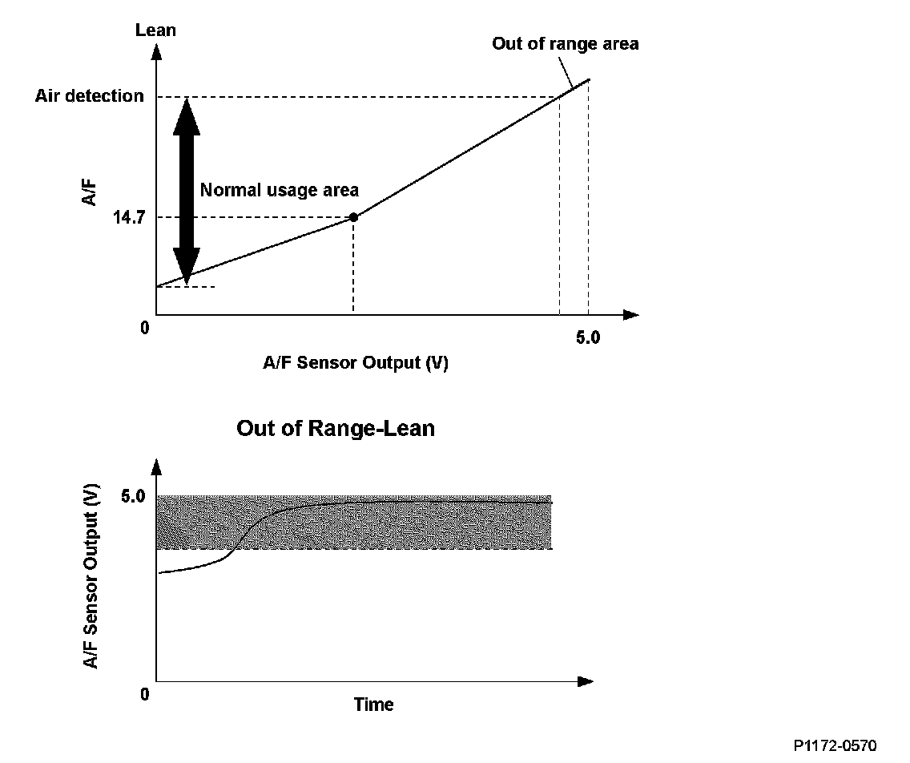
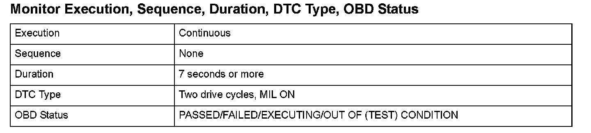
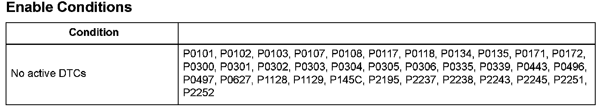

Advanced Diagnostics
DTC P1172: Rear Air/Fuel Ratio (A/F) Sensor (Bank 1, Sensor 1) Circuit Out of Range High
General Description
If a malfunction causes the rear air/fuel sensor (bank 1, sensor 1) signal to the powertrain control module (PCM) to deviate from the normal control area, the rear air/fuel ratio (A/F) sensor may still become active after the engine starts, but the air/fuel feedback does not start normally and the emissions deteriorate. When the rear A/F sensor output is out of the normal area, and this condition continues after the rear A/F sensor is active, the PCM detects a malfunction and a DTC is stored.

Monitor Execution, Sequence, Duration, DTC Type, OBD Status

Enable Conditions
Malfunction Threshold
A malfunction is detected when the rear A/F sensor (bank 1, sensor 1) output voltage is 4.7 V or more.
Driving Pattern
Start the engine. Hold the engine speed at 3,000 rpm without load (in Park or neutral) until the radiator fan comes on, then let it idle.
Diagnosis Details
Conditions for illuminating the MIL
When a malfunction is detected during the first drive cycle, a Temporary DTC is stored in the PCM memory. If the malfunction recurs during the next (second) drive cycle, the MIL comes on and the DTC and the freeze frame data are stored.
Conditions for clearing the MIL
The MIL will be cleared if the malfunction does not recur during three consecutive trips in which the diagnostic runs.
The MIL, the DTC, the Temporary DTC, and the freeze frame data can be cleared by using the scan tool Clear command or by disconnecting the battery.